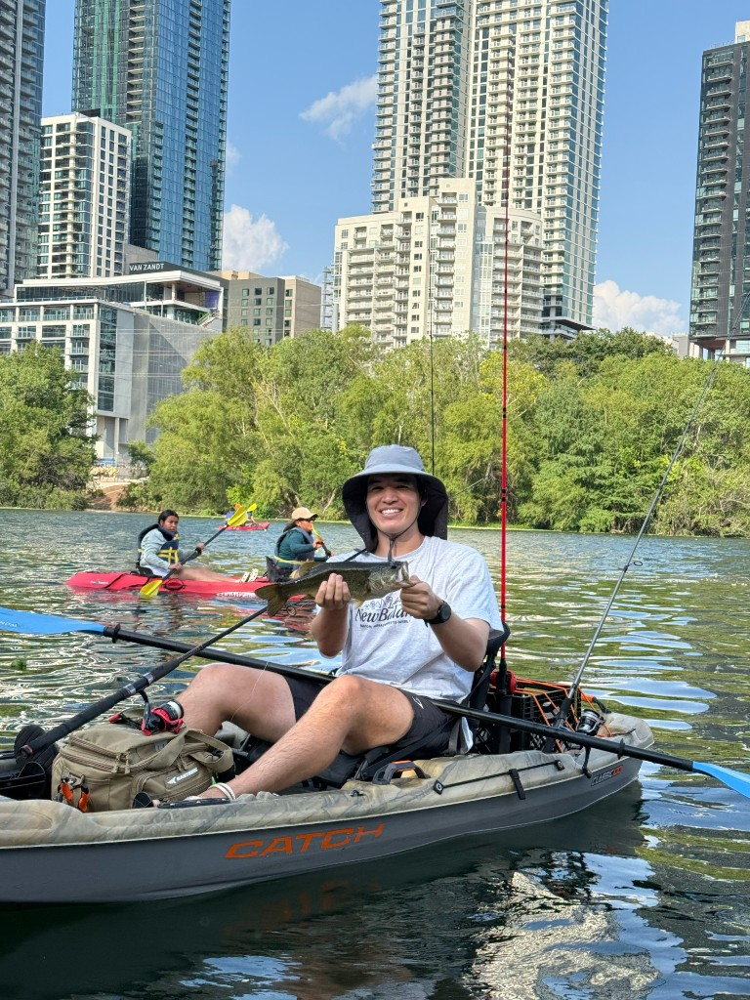
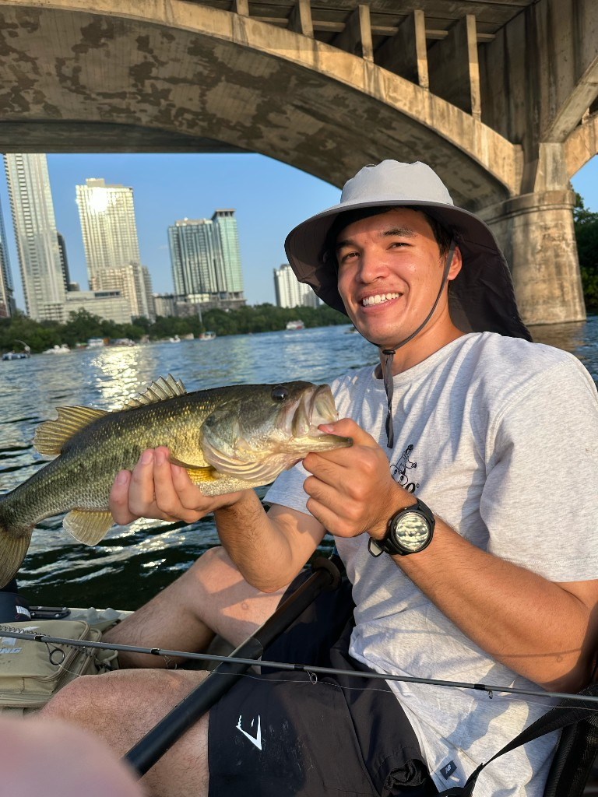
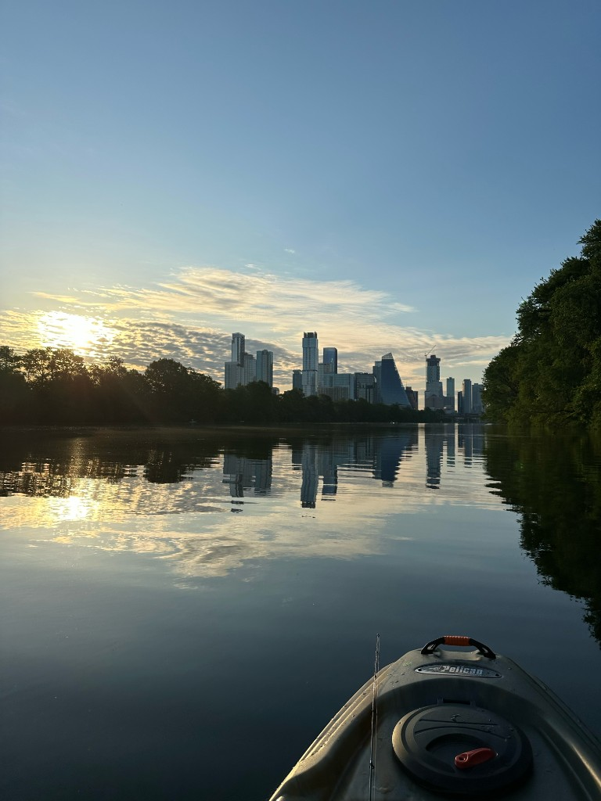
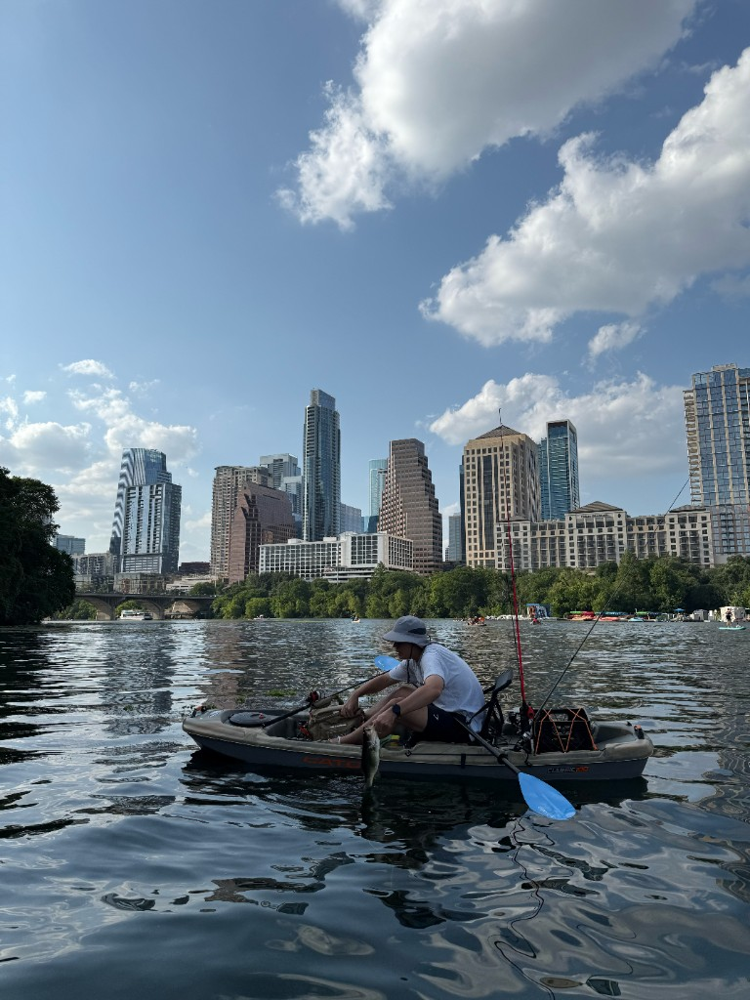
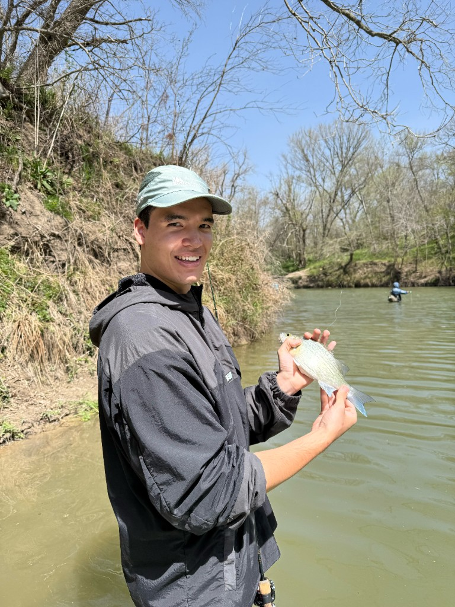
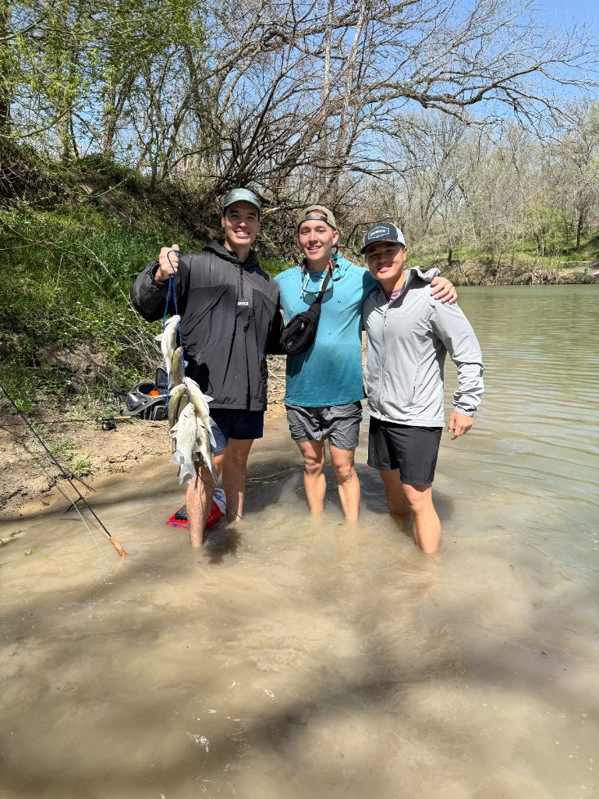
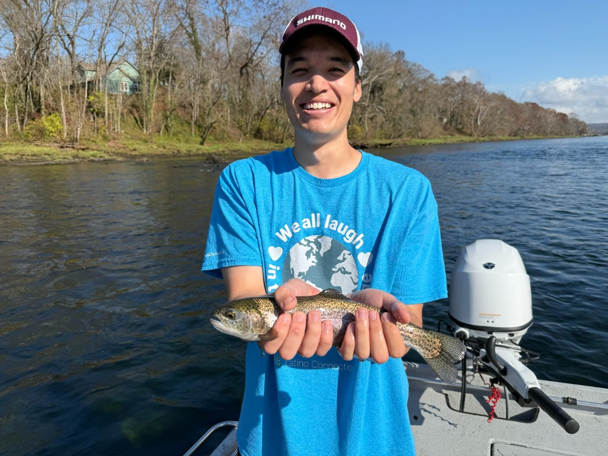

Fishing
Fishing is one of my favorite ways to spend free time. I only started getting into the hobby a couple years ago. Since then, I have spent lots of time (and money!) trying to catch big fish ranging from a bunch of different species!
Town Lake
Being in Austin, there is no shortage of great spots to fish. One of my favorites has to be downtown on Lady Bird Lake AKA Town Lake. Nothing beats kayaking around the calm waters in the urban sprawl.




White bass at "The Steps"
March has to be one of the best months for fishing. Around this time, the famous white bass run occurs! Me and my brother love hitting up San Gabriel River to catch this beautiful species. You have to be quick though, the run is very limited!


Fly fishing
Recently, I have picked up fly fishing. Turns out, it's pretty tough! So far, I have only caught sunfish and a handful of trout.
